Le premier album psychédélique de Pink Floyd
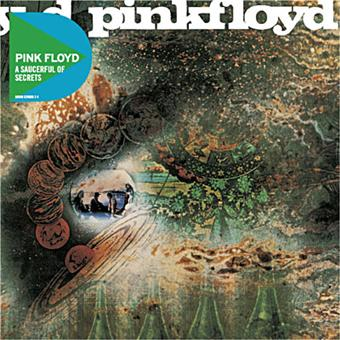
A Saucerful of Secrets - Année de parution : 1968
Une exploration musicale après le départ de Syd Barrett
Une exploration musicale après le départ de Syd Barrett
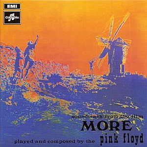
More - Année de parution : 1969
La bande originale du film éponyme "More", de Barbet Schroeder, avec des sons atmosphériques
La bande originale du film éponyme "More", de Barbet Schroeder, avec des sons atmosphériques
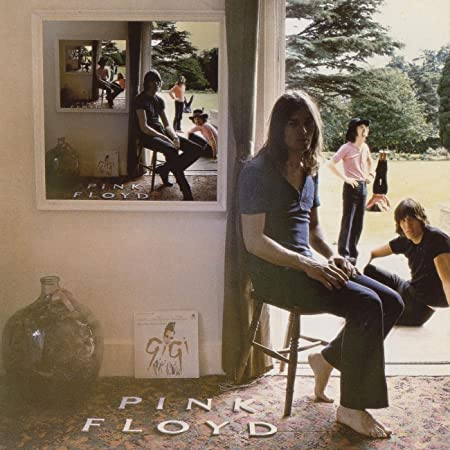
Ummagumma - Année de parution : 1969
Un album double avec des enregistrements live et des compositions studio
Un album double avec des enregistrements live et des compositions studio
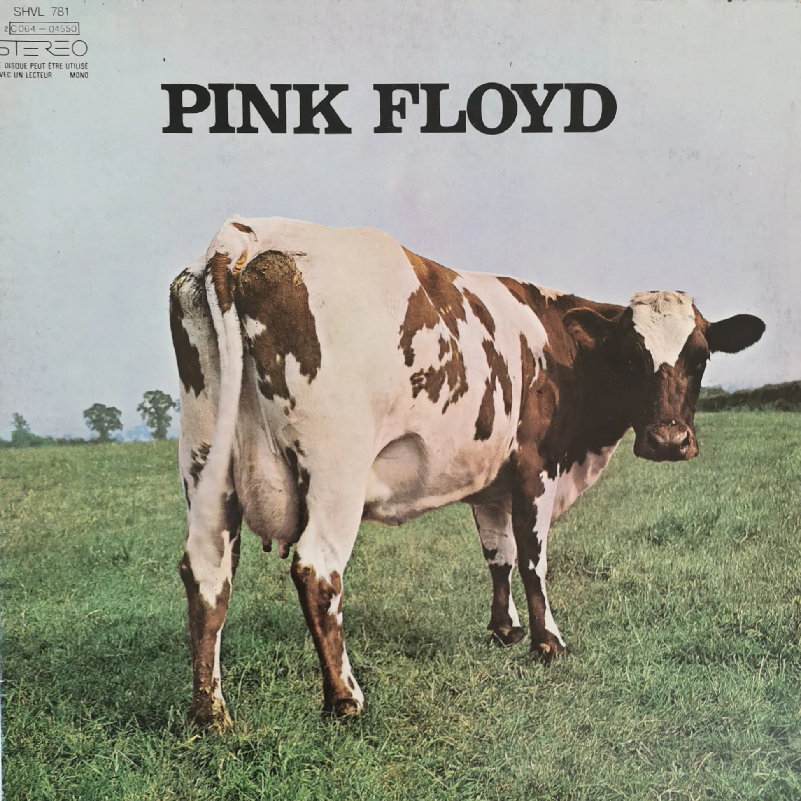
Atom Heart Mother - Année de parution : 1970
Un album orchestral et expérimental
Un album orchestral et expérimental

Contient le célèbre morceau "Echoes"
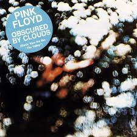
Obscured by Clouds - Année de parution : 1972
La bande originale du film "La Vallée"
La bande originale du film "La Vallée"

L'album emblématique, resté plus de 15 ans au Billboard 200
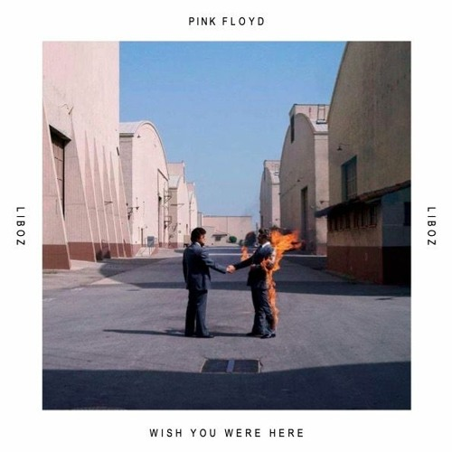
Wish You Were Here - Année de parution : 1975
Un hommage à Syd Barrett et un chef-d'œuvre du rock progressif
Un hommage à Syd Barrett et un chef-d'œuvre du rock progressif
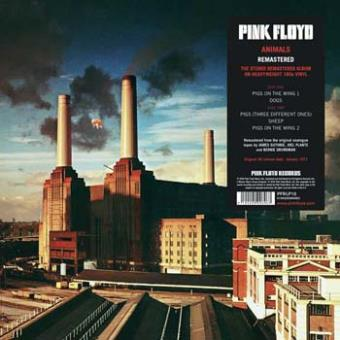
Animals - Année de parution : 1977
Des morceaux épiques inspirés d'Orwell, paru en pleine periode "punk"
Des morceaux épiques inspirés d'Orwell, paru en pleine periode "punk"
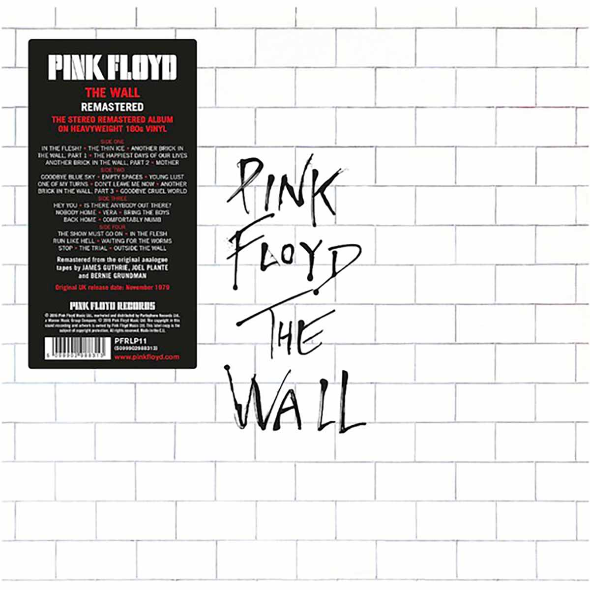
The Wall - Année de parution : 1979
Un opéra-rock monumental de Roger Waters
Un opéra-rock monumental de Roger Waters
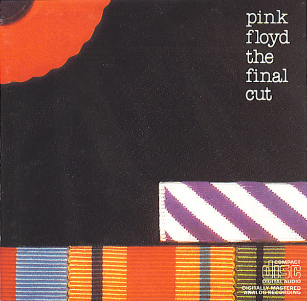
The Final Cut - Année de parution : 1983
Dernier album avec Roger Waters
Dernier album avec Roger Waters
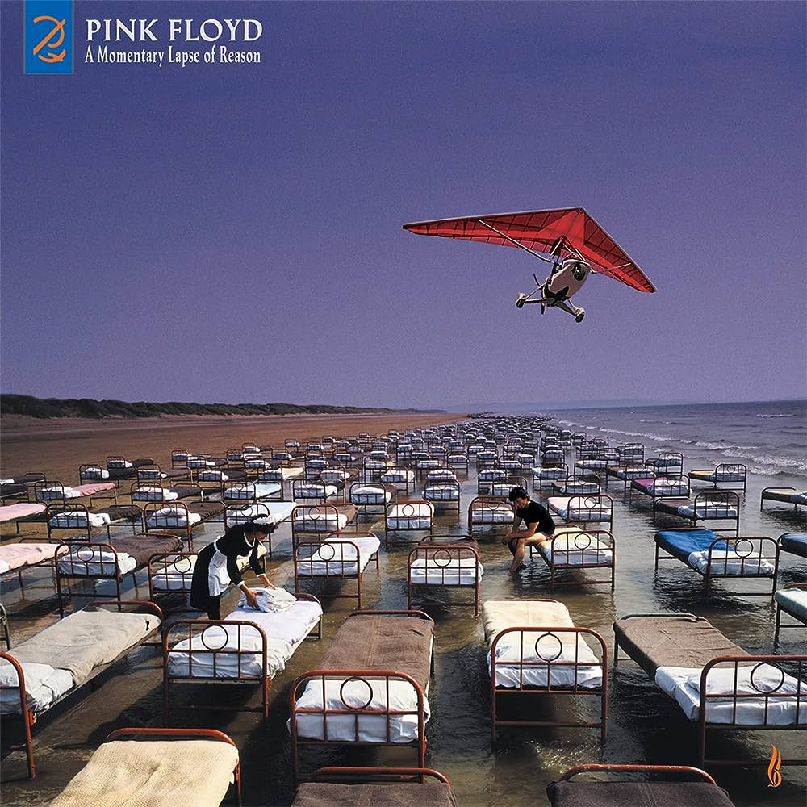
A Momentary Lapse of Reason - Année de parution : 1987
Le premier album sans Roger Waters (malheureusement, ça n'est plus tout à fait un album des Floyd si tu veux mon avis, il lui manque la violence et la colère du bassiste emblèmatique du groupe)
Le premier album sans Roger Waters (malheureusement, ça n'est plus tout à fait un album des Floyd si tu veux mon avis, il lui manque la violence et la colère du bassiste emblèmatique du groupe)
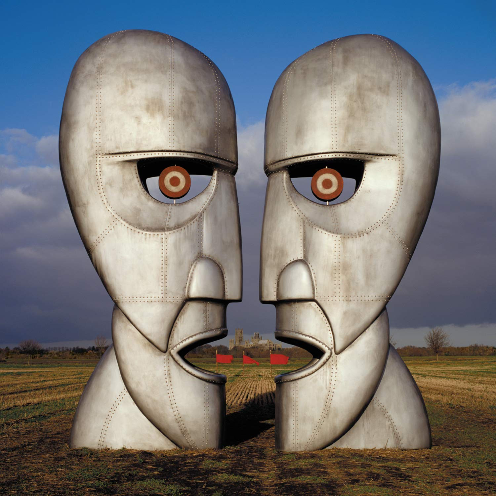
The Division Bell - Année de parution : 1994
Un album emblématique qui marque le retour de Richard Wright
Un album emblématique qui marque le retour de Richard Wright
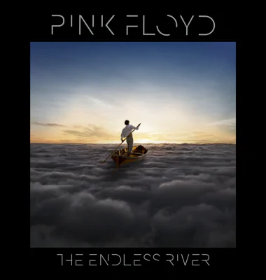
The Endless River - Année de parution : 2014
Un album instrumental basé sur des sessions inédites des années 1990
Un album instrumental basé sur des sessions inédites des années 1990